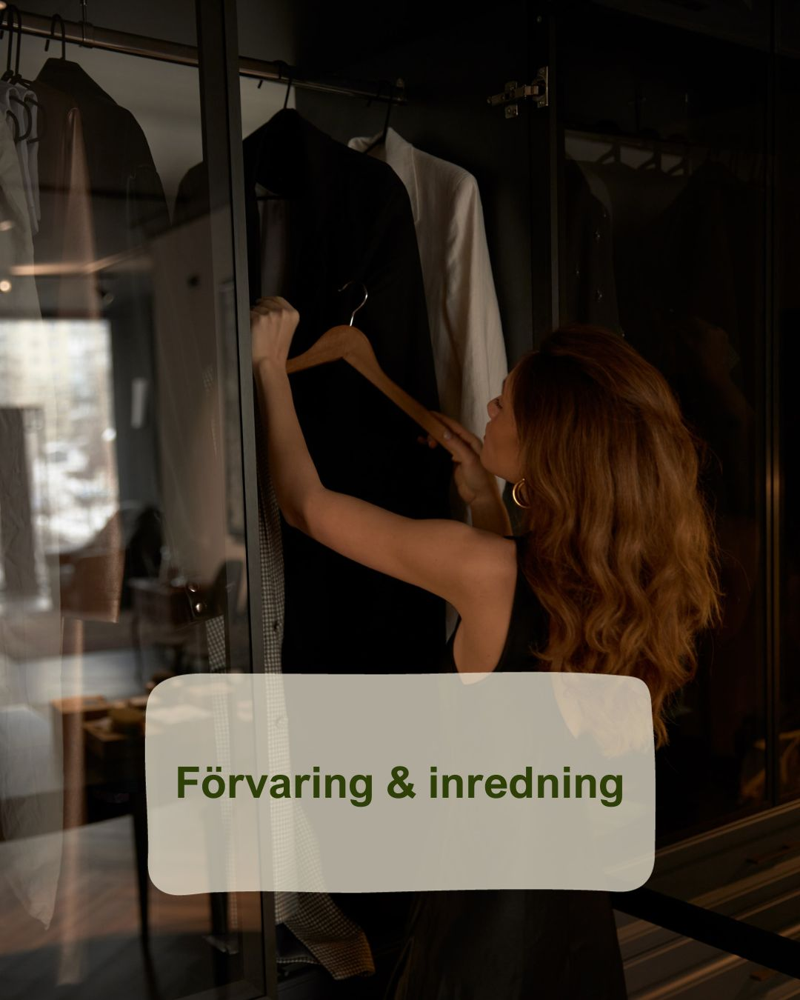
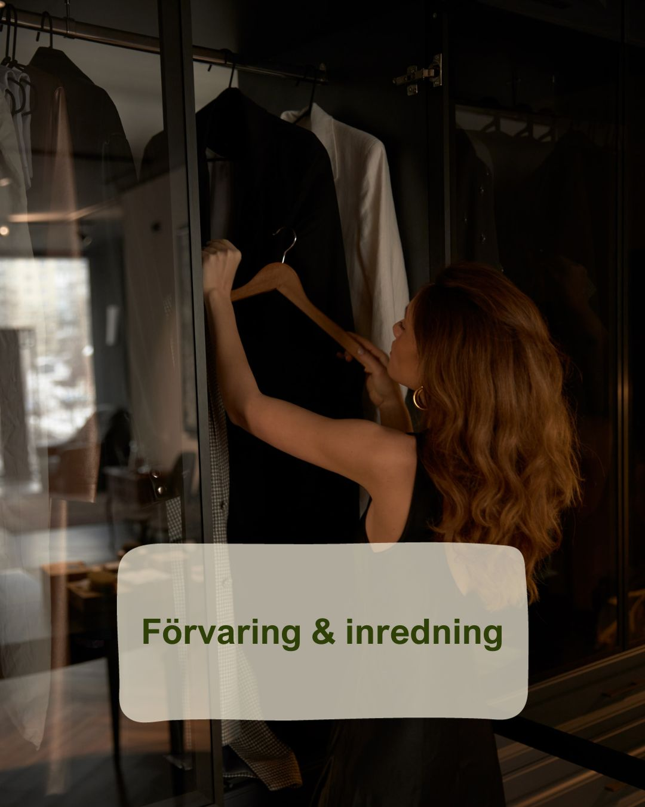

Välkommen till en värld av ordning och reda,
vi organiserar ditt hem så du kan trivas på riktigt hemma!
Du bestämmer själv vad du vill ha hjälp med. Vi börjar med en kostnadsfri konsultation där vi tillsammans med dig planerar och får veta vad just dina mål med ditt hem är.
Vi bokar sedan en tid som passar dig - vi arbetar både dagar, kvällar och helger.
Hur fungerar det då?
Genom professionell organisering ser vi till att ditt hem blir en plats för avkoppling och att din familj kan utföra sina aktiviteter och intressen smidigt.
Vi frigör din tid och energi för andra sysslor istället för att du ska slösa tid på att leta efter saker i ditt eget hem.
Genom noggrann kategorisering och smart förvaring ger vi varje föremål sin speciella plats i ditt hem.
Vi förseser allt med tydliga märkningar, inklusive lådor, för att göra det enkelt för både dig och dina familjemedlemmar att hitta och ställa tillbaka saker där de hör hemma.
Det är självklart upp till dig om du vill vara delaktig i hela processen. Vissa kunder väljer att vara delaktiga, medan andra föredrar att luta sig tillbaka och låta oss ta hand om det hela.
Hur vi jobbar
Vi hjälper dig att hitta rätt förvaring och inredning för dig, ditt hem och ditt behov.
Vi hittar smart, platsbesparande och snygg förvaring som passar din stil och budget.
Du väljer själv om du vill bolla idéer och förvaring fram och tillbaka med oss tills vi hittar det perfekta för dig, eller om du helt enkelt vill överlämna jobbet till oss.
Vi hjälper er gärna med:
 
